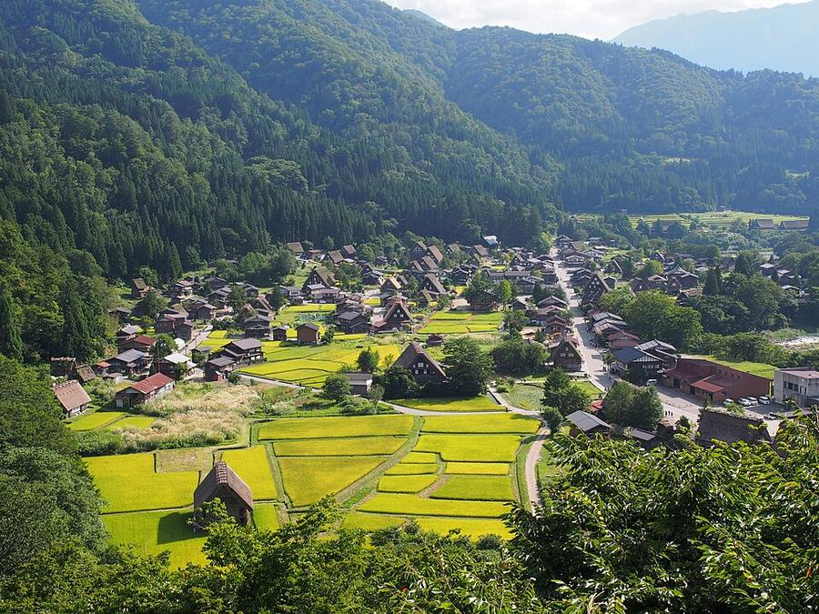
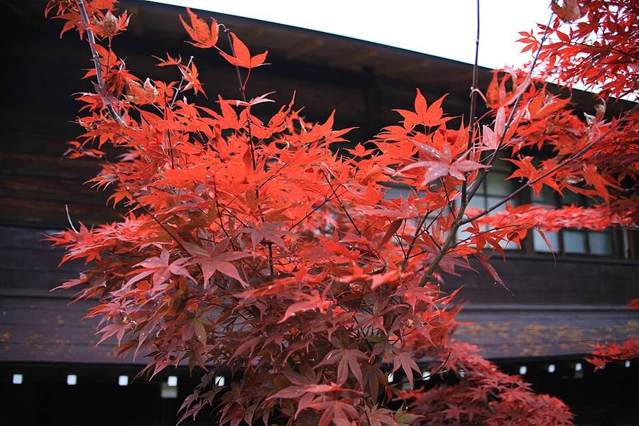
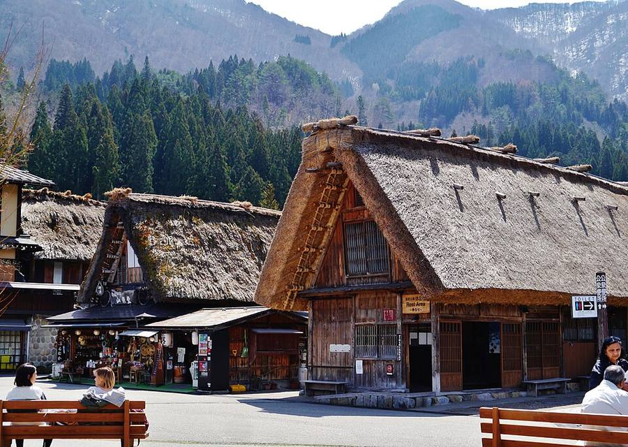
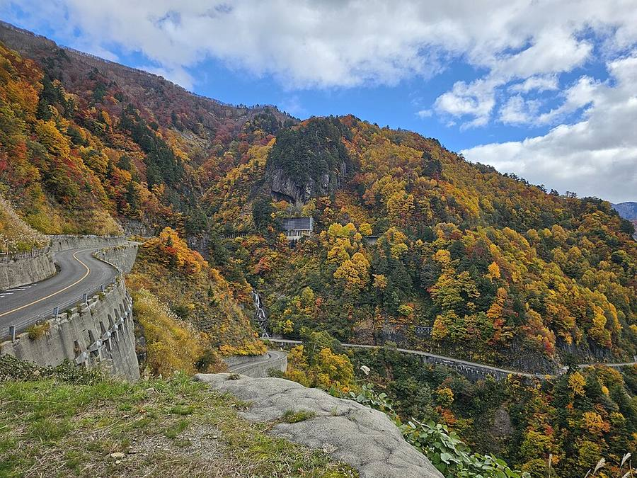

Shirakawa-go
Деревня домов с крутыми соломенными крышами. Объект ЮНЕСКО


.jpg){kind=link}

.jpg){kind=link}





.jpg){kind=link}







Что это
- Объект Всемирного наследия ЮНЕСКО с 1995 года.
- Дома gassho-zukuri: крутые соломенные крыши похожи на ладони монахов, сложенные в молитве, и держат тяжёлый зимний снег. Некоторым домам больше 250 лет.
- Главная деревня - Ogimachi. Её удобно посмотреть по пути из Takayama в Kanazawa: 2-3 часа хватает.
- По japan-guide, самое настоящее впечатление - ночёвка в доме-гостинице minshuku. Тише и меньше туристов в соседних деревнях Gokayama (Ainokura, Suganuma).
Как добраться
Автобусы Nohi: Takayama → Shirakawa-go 1 ч 12 мин (2 800 ¥), Shirakawa-go → Kanazawa около 1 ч 15 мин. Билеты лучше брать заранее.
Срез 12.10.2026, 10:00-12:00 по Токио. Погода: прогноз Open-Meteo на 12.10. Листва: Weathernews, визит-центр Nikko Yumoto, официальный сайт Tateyama Kurobe Alpine Route. Вулканы: Японское метеоагентство (JMA), префектура Kanagawa. Часы и цены: официальные сайты и japan-guide.com. Переезды: japan-guide, ekitan, Rome2Rio, обзоры. Фото: Wikimedia Commons (автор и лицензия под каждым), визит-центр Nikko Yumoto. Карта: Esri. Отели не проверялись и не бронировались.